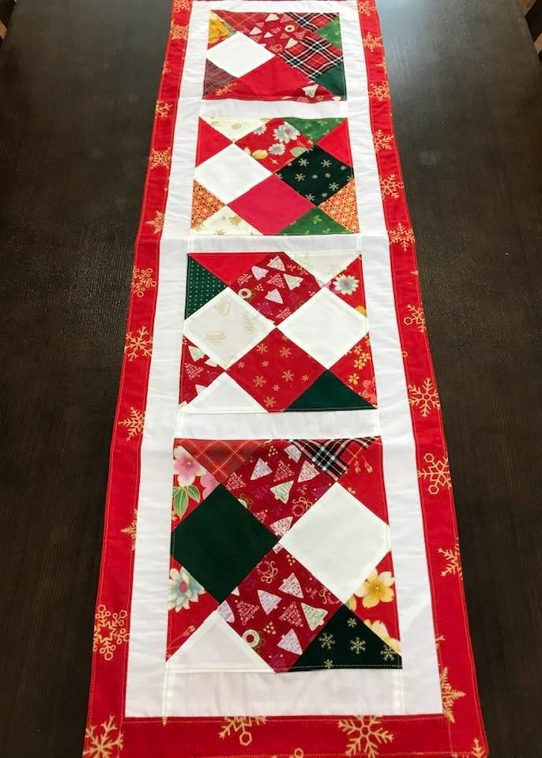
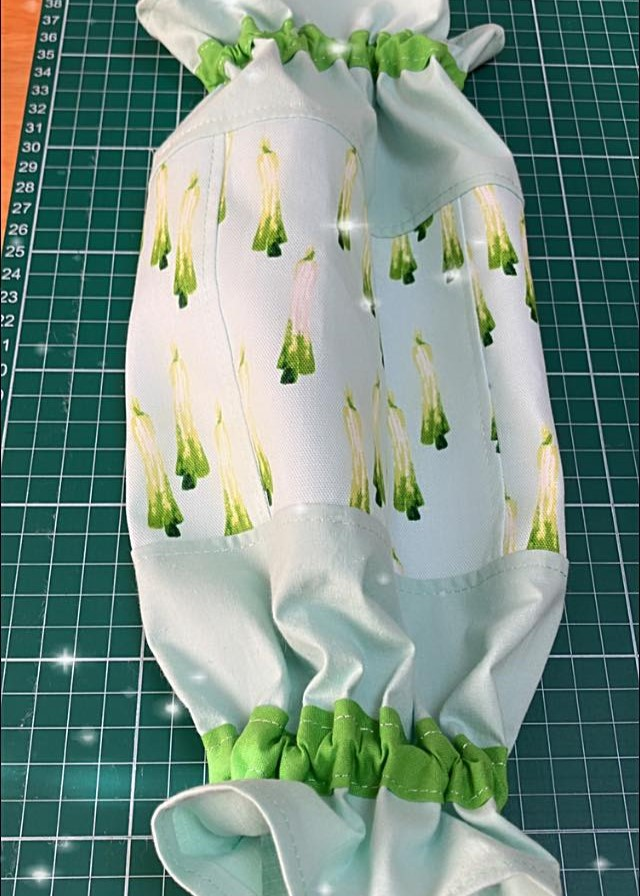
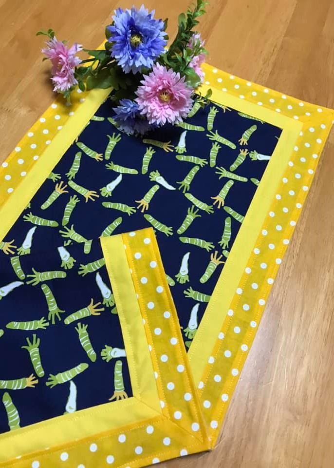
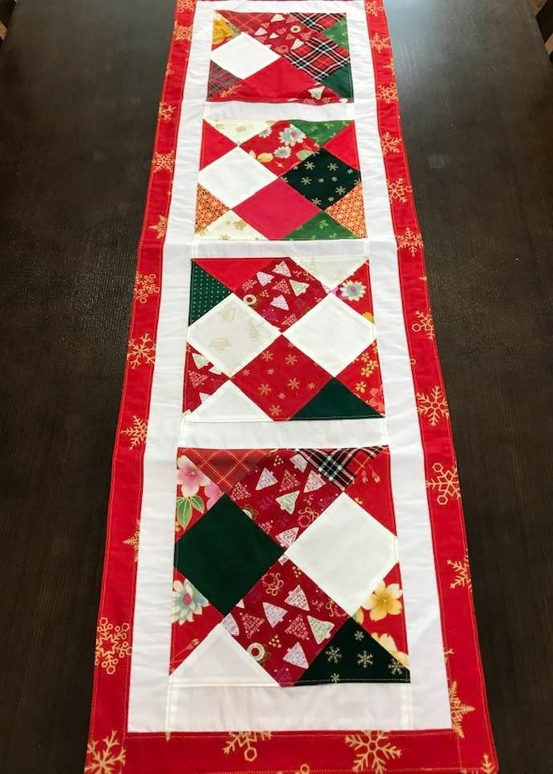
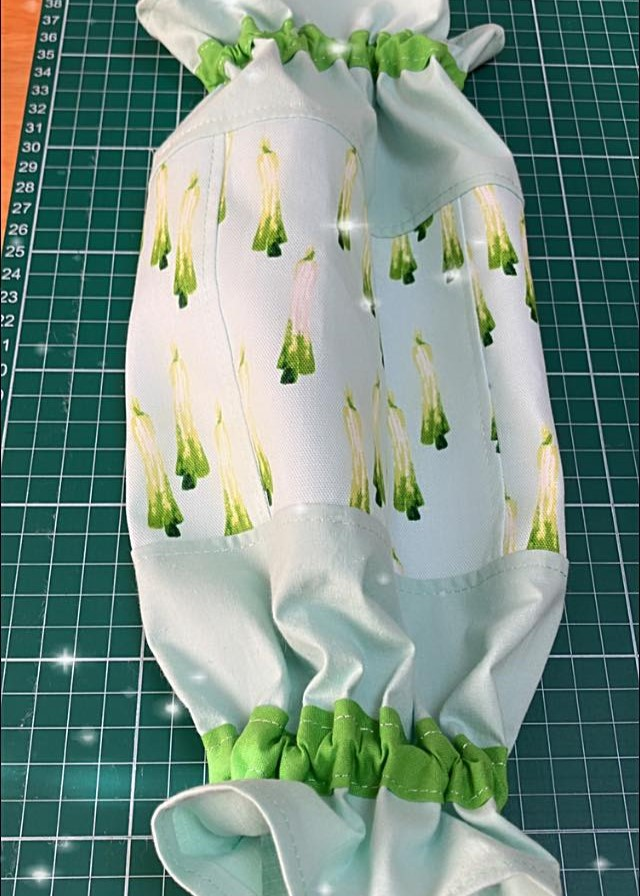
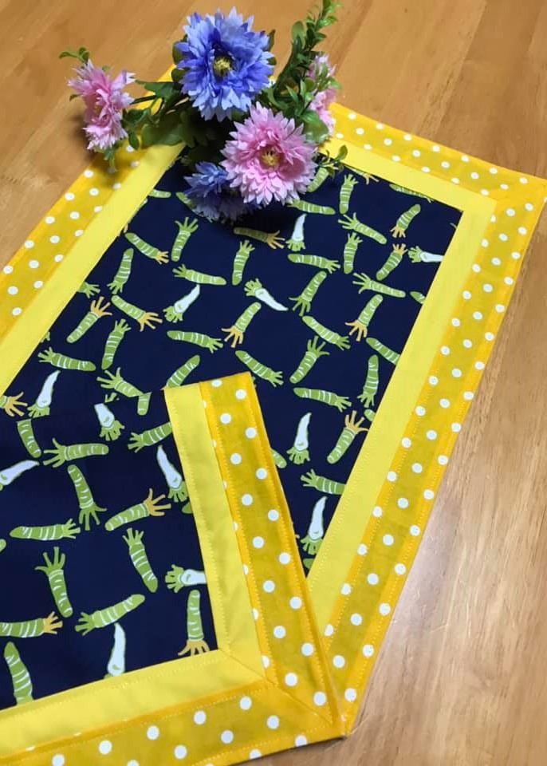
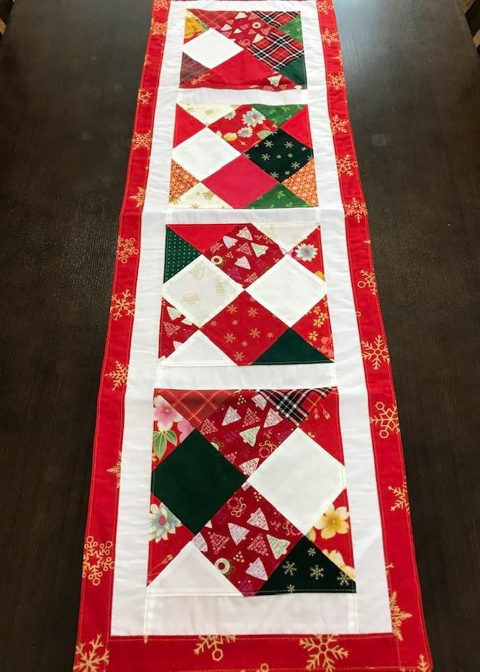
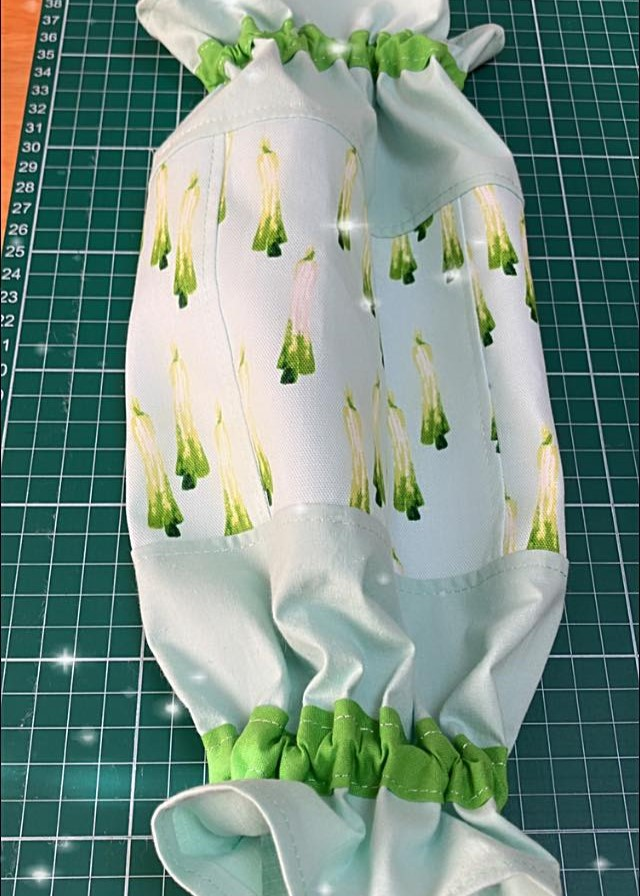
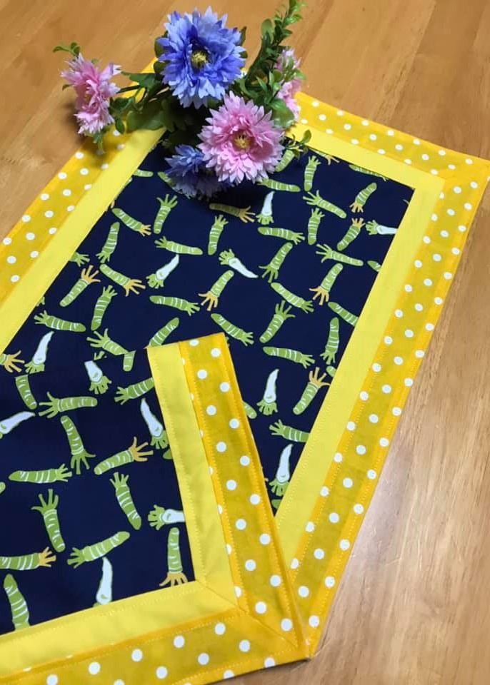

As toalhas de mesa trazem um toque acolhedor ao seu lar, feitas para proteger sua mesa com elegância, são peças versáteis que combinam com diversos ambientes, ideais para uso diário ou ocasiões especiais.



Quer uma toalha de mesa personalizada? Entre em contato e conte sua ideia!